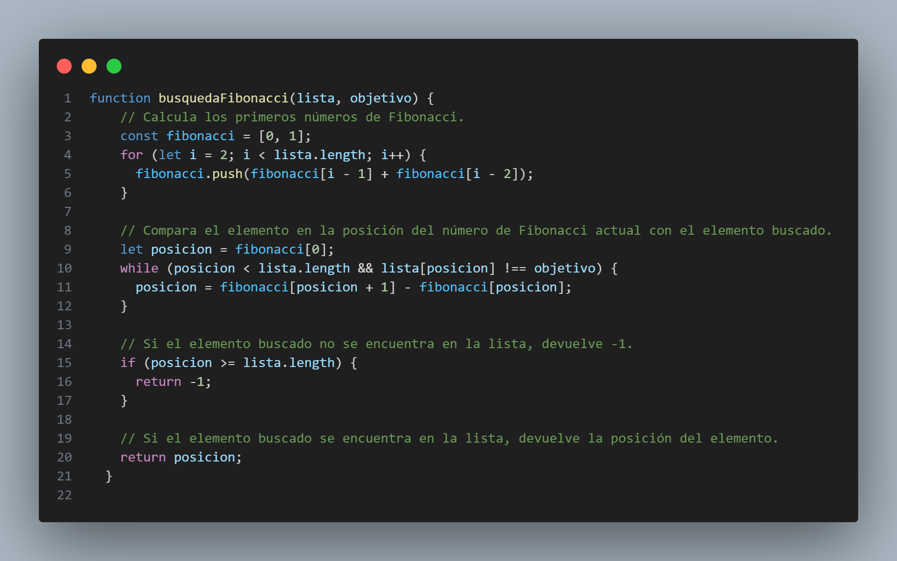

Algoritmos de Busqueda
Un algoritmo de búsqueda es un conjunto de instrucciones que están diseñadas para localizar un elemento con ciertas propiedades dentro de una estructura de datos. Por ejemplo, un algoritmo de búsqueda podría utilizarse para encontrar un registro correspondiente a cierta persona en una base de datos, o el mejor movimiento en una partida de ajedrez.
Tipos de algoritmos de busqueda
- Búsqueda lineal
- Búsqueda lineal centinela
- El algoritmo comienza comparando el elemento actual con el elemento centinela. Si el elemento actual es igual al centinela, el algoritmo devuelve -1, lo que indica que el elemento buscado no se encuentra en la estructura de datos.
- Si el elemento actual no es igual al centinela, el algoritmo compara el elemento actual con el elemento buscado. Si los elementos coinciden, el algoritmo devuelve la posición del elemento actual en la estructura de datos.
- Si los elementos no coinciden, el algoritmo avanza al siguiente elemento de la estructura de datos.
- Garantiza que el algoritmo siempre terminará, incluso si el elemento buscado no se encuentra en la estructura de datos. Esto se debe a que el algoritmo siempre compara el elemento actual con el centinela, y el centinela tiene un valor mayor que cualquier otro elemento de la estructura de datos.
- Reduce la cantidad de comparaciones necesarias en algunos casos. Esto se debe a que el algoritmo puede terminar la búsqueda antes de llegar al final de la estructura de datos si encuentra un elemento que es mayor o igual que el elemento buscado.
- Añade un elemento adicional a la estructura de datos. Esto puede ser un inconveniente en algunos casos.
- El algoritmo puede ser ligeramente más lento que la búsqueda lineal en algunos casos. Esto se debe a que el algoritmo debe comparar el elemento actual con el centinela en cada iteración.
- Búsqueda binaria
- Búsqueda meta binaria | Búsqueda binaria unilateral
- El algoritmo comienza en el punto especificado por el usuario.
- El algoritmo compara el elemento en el punto actual con el elemento buscado.
- Si el elemento en el punto actual es igual al elemento buscado, el algoritmo devuelve el índice del punto actual.
- Si el elemento en el punto actual es menor que el elemento buscado, el algoritmo busca en la mitad superior de la lista.
- Si el elemento en el punto actual es mayor que el elemento buscado, el algoritmo busca en la mitad inferior de la lista.
- El algoritmo continúa dividiendo la lista en dos mitades hasta que encuentra el elemento buscado o hasta que la lista se haya reducido a un solo elemento.
- Búsqueda ternaria
- El algoritmo encuentra el punto medio de la lista.
- El algoritmo compara el elemento en el punto medio con el elemento buscado.
- Si el elemento en el punto medio es igual al elemento buscado, el algoritmo devuelve el índice del punto medio.
- Si el elemento en el punto medio es menor que el elemento buscado, el algoritmo busca en la mitad superior de la lista.
- Si el elemento en el punto medio es mayor que el elemento buscado, el algoritmo busca en la mitad inferior de la lista.
- El algoritmo continúa dividiendo la lista en tres partes hasta que encuentra el elemento buscado o hasta que la lista se haya reducido a un solo elemento.
- Salto de búsqueda
- El algoritmo calcula el salto inicial, que es una función del tamaño de la lista.
- El algoritmo compara el elemento en la posición del salto inicial con el elemento buscado.
- Si el elemento en la posición del salto inicial es igual al elemento buscado, el algoritmo devuelve el índice del salto inicial.
- Si el elemento en la posición del salto inicial es menor que el elemento buscado, el algoritmo busca en la mitad superior de la lista.
- Si el elemento en la posición del salto inicial es mayor que el elemento buscado, el algoritmo busca en la mitad inferior de la lista.
- El algoritmo continúa dividiendo la lista en dos mitades hasta que encuentra el elemento buscado o hasta que la lista se haya reducido a un solo elemento.
- Búsqueda de interpolación
- El algoritmo calcula la posición estimada del elemento buscado.
- El algoritmo compara el elemento en la posición estimada con el elemento buscado.
- Si el elemento en la posición estimada es igual al elemento buscado, el algoritmo devuelve el índice de la posición estimada.
- Si el elemento en la posición estimada es menor que el elemento buscado, el algoritmo busca en la mitad superior de la lista.
- Si el elemento en la posición estimada es mayor que el elemento buscado, el algoritmo busca en la mitad inferior de la lista.
- El algoritmo continúa dividiendo la lista en dos mitades hasta que encuentra el elemento buscado o hasta que la lista se haya reducido a un solo elemento.
- Búsqueda exponencial
- El algoritmo calcula el factor de salto.
- El algoritmo compara el elemento en la posición del factor de salto con el elemento buscado.
- Si el elemento en la posición del factor de salto es igual al elemento buscado, el algoritmo devuelve el índice del factor de salto.
- Si el elemento en la posición del factor de salto es menor que el elemento buscado, el algoritmo busca en la mitad superior de la lista.
- Si el elemento en la posición del factor de salto es mayor que el elemento buscado, el algoritmo busca en la mitad inferior de la lista.
- El algoritmo continúa dividiendo la lista en dos mitades hasta que encuentra el elemento buscado o hasta que la lista se haya reducido a un solo elemento.
- Búsqueda de Fibonacci
- El algoritmo calcula los primeros números de Fibonacci.
- El algoritmo compara el elemento en la posición del número de Fibonacci actual con el elemento buscado.
- Si el elemento en la posición del número de Fibonacci actual es igual al elemento buscado, el algoritmo devuelve el índice del número de Fibonacci actual.
- Si el elemento en la posición del número de Fibonacci actual es menor que el elemento buscado, el algoritmo busca en la mitad superior de la lista.
- Si el elemento en la posición del número de Fibonacci actual es mayor que el elemento buscado, el algoritmo busca en la mitad inferior de la lista.
- El algoritmo continúa dividiendo la lista en dos mitades hasta que encuentra el elemento buscado o hasta que la lista se haya reducido a un solo elemento.
- La búsqueda binaria ubicua
- El algoritmo encuentra el índice del elemento más cercano al elemento buscado.
- Si el elemento más cercano es igual al elemento buscado, el algoritmo devuelve el índice del elemento.
- Si el elemento más cercano es menor que el elemento buscado, el algoritmo devuelve -1.
- Si el elemento más cercano es mayor que el elemento buscado, el algoritmo devuelve el índice del elemento más cercano más 1.
Un algoritmo de búsqueda lineal es un algoritmo que busca un elemento en una estructura de datos secuencial, comparando cada elemento de la estructura con el elemento buscado.
Una analogía sencilla para entender el concepto de búsqueda lineal es la siguiente: imagínate que tienes una lista de números ordenados, como [1, 2, 3, 4, 5]. Si quieres encontrar el número 3, puedes empezar por el primer elemento de la lista y compararlo con el número buscado. Si son iguales, has encontrado el elemento. Si no son iguales, comparas el siguiente elemento de la lista, y así sucesivamente. Si llegas al final de la lista sin haber encontrado el elemento buscado, significa que el elemento no está presente en la lista.

La búsqueda lineal es un algoritmo de búsqueda simple y fácil de implementar. Funciona comparando cada elemento de una estructura de datos secuencial con el elemento buscado. Si el elemento buscado se encuentra en la estructura, el algoritmo devuelve la posición del elemento en la estructura. Si el elemento buscado no se encuentra en la estructura, el algoritmo devuelve un valor especial, como None o -1.
La complejidad temporal de la búsqueda lineal es O(n), donde n es el tamaño de la estructura de datos. Esto significa que el tiempo de ejecución del algoritmo es proporcional al tamaño de la estructura de datos.
La búsqueda lineal es un algoritmo eficiente para estructuras de datos pequeñas. Sin embargo, para estructuras de datos grandes, la búsqueda lineal puede ser ineficiente. En estos casos, es preferible utilizar algoritmos de búsqueda más eficientes, como la búsqueda binaria.
La búsqueda lineal centinela es una variante de la búsqueda lineal que añade un elemento especial al final de la estructura de datos que se está buscando. Este elemento especial, llamado centinela, tiene un valor mayor que cualquier otro elemento de la estructura de datos.
La búsqueda lineal centinela funciona de la siguiente manera:
La búsqueda lineal centinela tiene las siguientes ventajas sobre la búsqueda lineal:
La búsqueda lineal centinela tiene las siguientes desventajas sobre la búsqueda lineal:
La Búsqueda Binaria
La búsqueda binaria es un algoritmo de búsqueda eficiente que funciona con listas ordenadas. El algoritmo funciona dividiendo la lista en dos mitades, comparando el elemento buscado con el elemento en el medio de la lista. Si el elemento buscado es igual al elemento del medio, el algoritmo ha encontrado el elemento. Si el elemento buscado es menor que el elemento del medio, el algoritmo busca en la mitad inferior de la lista. Si el elemento buscado es mayor que el elemento del medio, el algoritmo busca en la mitad superior de la lista.
El algoritmo continúa dividiendo la lista en dos mitades hasta que encuentra el elemento buscado o hasta que la lista se haya reducido a un solo elemento.
La búsqueda binaria tiene una complejidad temporal de O(log n), donde n es el tamaño de la lista. Esto significa que el tiempo de ejecución del algoritmo es proporcional al logaritmo del tamaño de la lista.
Aquí hay un ejemplo de código de la búsqueda binaria en JavaScript:
La búsqueda meta binaria es un algoritmo de búsqueda que funciona de manera similar a la búsqueda binaria, pero con una diferencia clave: la búsqueda meta binaria puede comenzar en cualquier punto de la lista, en lugar de siempre comenzar en el principio.
La búsqueda meta binaria funciona de la siguiente manera:
La búsqueda meta binaria tiene una complejidad temporal de O(log n), donde n es el tamaño de la lista. Esto significa que el tiempo de ejecución del algoritmo es proporcional al logaritmo del tamaño de la lista.
Imagina que estás buscando un libro en una biblioteca. La biblioteca está ordenada alfabéticamente, y sabes que el libro que estás buscando está en algún lugar de la biblioteca.
La búsqueda binaria sería como empezar a buscar en el principio de la biblioteca y seguir dividiendo la biblioteca en dos mitades hasta que encuentres el libro que estás buscando.
La búsqueda meta binaria sería como empezar a buscar en cualquier lugar de la biblioteca que elijas. Por ejemplo, podrías empezar por el estante del medio, o por el estante más alto. Luego, seguirías dividiendo la biblioteca en dos mitades hasta que encontraras el libro que estás buscando.
Aquí hay un ejemplo de código de la búsqueda meta binaria en JavaScript:
La búsqueda ternaria es un algoritmo de búsqueda que funciona de manera similar a la búsqueda binaria, pero con una diferencia clave: la búsqueda ternaria divide la lista en tres partes en lugar de dos.
La búsqueda ternaria funciona de la siguiente manera:
La búsqueda ternaria tiene una complejidad temporal de O(log3 n), donde n es el tamaño de la lista. Esto significa que el tiempo de ejecución del algoritmo es proporcional al logaritmo del tamaño de la lista.
Imagina que estás buscando un libro en una biblioteca. La biblioteca está ordenada alfabéticamente, y sabes que el libro que estás buscando está en algún lugar de la biblioteca.
La búsqueda binaria sería como empezar a buscar en el principio de la biblioteca y seguir dividiendo la biblioteca en dos mitades hasta que encuentres el libro que estás buscando.
La búsqueda ternaria sería como empezar a buscar en el estante del medio de la biblioteca. Luego, seguirías dividiendo la biblioteca en tres partes hasta que encontraras el libro que estás buscando.
Aquí hay un ejemplo de código de la búsqueda ternaria en JavaScript:
La búsqueda de salto es un algoritmo de búsqueda que funciona de manera similar a la búsqueda binaria, pero con una diferencia clave: la búsqueda de salto utiliza un salto inicial para reducir el rango de búsqueda.
La búsqueda de salto funciona de la siguiente manera:
La búsqueda de salto tiene una complejidad temporal de O(log n / log log n), donde n es el tamaño de la lista. Esto significa que el tiempo de ejecución del algoritmo es proporcional al logaritmo del logaritmo del tamaño de la lista.
Imagina que estás buscando un libro en una biblioteca. La biblioteca está ordenada alfabéticamente, y sabes que el libro que estás buscando está en algún lugar de la biblioteca.
La búsqueda binaria sería como empezar a buscar en el principio de la biblioteca y seguir dividiendo la biblioteca en dos mitades hasta que encuentres el libro que estás buscando.
La búsqueda de salto sería como empezar a buscar en el estante del medio de la biblioteca. Luego, seguirías dividiendo la biblioteca en dos mitades hasta que encontraras el libro que estás buscando.
Aquí hay un ejemplo de código de la búsqueda de salto en JavaScript:
La búsqueda de interpolación es un algoritmo de búsqueda que funciona de manera similar a la búsqueda binaria, pero con una diferencia clave: la búsqueda de interpolación utiliza una fórmula para estimar la posición del elemento buscado.
La búsqueda de interpolación funciona de la siguiente manera:
La búsqueda de interpolación tiene una complejidad temporal de O(log log n), donde n es el tamaño de la lista. Esto significa que el tiempo de ejecución del algoritmo es proporcional al logaritmo del logaritmo del tamaño de la lista.
Analogía
Imagina que estás buscando un libro en una biblioteca. La biblioteca está ordenada alfabéticamente, y sabes que el libro que estás buscando está en algún lugar de la lista.
La búsqueda binaria sería como empezar a buscar en el principio de la biblioteca y seguir dividiendo la biblioteca en dos mitades hasta que encuentres el libro que estás buscando.
La búsqueda de interpolación sería como empezar a buscar en el estante del medio de la biblioteca y luego seguir dividiendo la biblioteca en dos mitades, pero utilizando una fórmula para estimar la posición del libro que estás buscando.
Código JavaScript
Aquí hay un ejemplo de código de la búsqueda de interpolación en JavaScript:

La búsqueda exponencial es un algoritmo de búsqueda que funciona de manera similar a la búsqueda binaria, pero con una diferencia clave: la búsqueda exponencial utiliza un factor de salto exponencial para reducir el rango de búsqueda.
La búsqueda exponencial funciona de la siguiente manera:
La búsqueda exponencial tiene una complejidad temporal de O(log(log n)), donde n es el tamaño de la lista. Esto significa que el tiempo de ejecución del algoritmo es proporcional al logaritmo del logaritmo del tamaño de la lista.
Analogía
Imagina que estás buscando un libro en una biblioteca. La biblioteca está ordenada alfabéticamente, y sabes que el libro que estás buscando está en algún lugar de la lista.
La búsqueda binaria sería como empezar a buscar en el principio de la biblioteca y seguir dividiendo la biblioteca en dos mitades hasta que encuentres el libro que estás buscando.
La búsqueda exponencial sería como empezar a buscar en el estante del medio de la biblioteca y luego seguir dividiendo la biblioteca en dos mitades, pero utilizando un factor de salto exponencial para reducir el rango de búsqueda.
La búsqueda de Fibonacci es un algoritmo de búsqueda que funciona de manera similar a la búsqueda binaria, pero con una diferencia clave: la búsqueda de Fibonacci utiliza una secuencia de Fibonacci para reducir el rango de búsqueda.
La búsqueda de Fibonacci funciona de la siguiente manera:
La búsqueda de Fibonacci tiene una complejidad temporal de O(log(log n)), donde n es el tamaño de la lista. Esto significa que el tiempo de ejecución del algoritmo es proporcional al logaritmo del logaritmo del tamaño de la lista.
Imagina que estás buscando un libro en una biblioteca. La biblioteca está ordenada alfabéticamente, y sabes que el libro que estás buscando está en algún lugar de la lista.
La búsqueda binaria sería como empezar a buscar en el principio de la biblioteca y seguir dividiendo la biblioteca en dos mitades hasta que encuentres el libro que estás buscando.
La búsqueda de Fibonacci sería como empezar a buscar en el estante del medio de la biblioteca y luego seguir dividiendo la biblioteca en dos mitades, pero utilizando una secuencia de Fibonacci para reducir el rango de búsqueda.
Aquí hay un ejemplo de código de la búsqueda de Fibonacci en JavaScript:
La búsqueda binaria ubicua es una variante de la búsqueda binaria que permite encontrar el índice de un elemento en una lista ordenada, incluso si el elemento no está presente en la lista.
La búsqueda binaria ubicua funciona de la siguiente manera:
La búsqueda binaria ubicua tiene una complejidad temporal de O(log n), donde n es el tamaño de la lista. Esto significa que el tiempo de ejecución del algoritmo es proporcional al logaritmo del tamaño de la lista.
Imagina que estás buscando un libro en una biblioteca. La biblioteca está ordenada alfabéticamente, y sabes que el libro que estás buscando está en algún lugar de la lista.
La búsqueda binaria sería como empezar a buscar en el principio de la biblioteca y seguir dividiendo la biblioteca en dos mitades hasta que encuentres el libro que estás buscando. Si no encuentras el libro, el algoritmo devuelve -1.
La búsqueda binaria ubicua sería como empezar a buscar en el principio de la biblioteca y seguir dividiendo la biblioteca en dos mitades hasta que encuentres el libro más cercano al libro que estás buscando. Si el libro más cercano es igual al libro que estás buscando, el algoritmo devuelve el índice del libro. Si el libro más cercano es menor que el libro que estás buscando, el algoritmo devuelve -1. Si el libro más cercano es mayor que el libro que estás buscando, el algoritmo devuelve el índice del libro más cercano más 1.
Comparaciones
- Búsqueda lineal vs búsqueda binaria
- Búsqueda de interpolación vs búsqueda binaria
- ¿Por qué se prefiere la búsqueda binaria a la búsqueda ternaria?
- ¿La búsqueda lineal de Sentinel es mejor que la búsqueda lineal normal?
Implementaciones de biblioteca de algoritmos de búsqueda
- Funciones de búsqueda binaria en C++ STL (binary_search, lower_bound y upper_bound)
- Arrays.binarySearch() en Java con ejemplos | Serie 1
- Arrays.binarySearch() en Java con ejemplos | Conjunto 2 (Buscar en subarreglo)
- Collections.binarySearch() en Java con ejemplos
Temario
- Encuentra los tres elementos más grandes en una matriz
- Encuentre el número perdido
- Encuentre el primer elemento repetido en una matriz de enteros
- Encuentra el número que falta y se repite
- Buscar, insertar y eliminar en una matriz ordenada
- Cuente 1 en una matriz binaria ordenada
- Dos elementos cuya suma es lo más cercano a cero
- Encuentra un par con la diferencia dada
- k elementos más grandes (o más pequeños) en una matriz
- K-ésimo elemento más pequeño en una matriz 2D ordenada por filas y columnas
- Encuentra elementos comunes en tres matrices ordenadas
- Techo en una matriz ordenada
- Piso en una matriz ordenada
- Encuentre el elemento máximo en una matriz que primero es creciente y luego decreciente
- Dada una matriz de tamaño n y un número k, encuentre todos los elementos que aparecen más de n/k veces
- Encuentra todos los tripletes con suma cero
- Encuentre el elemento antes del cual todos los elementos son más pequeños que él, y después del cual todos son más grandes
- Encuentre la suma de pares más grande en una matriz no ordenada
- K'th elemento más pequeño/más grande en matriz no ordenada
- Buscar un elemento en una matriz ordenada y rotada
- Encuentre el elemento mínimo en una matriz ordenada y rotada
- Encuentra un elemento pico
- Máximo y mínimo de una matriz usando el número mínimo de comparaciones
- Encuentra un punto fijo en una matriz dada
- Encuentra las k palabras más frecuentes de un archivo
- Encuentra los k elementos más cercanos a un valor dado
- Dada una matriz ordenada y un número x, encuentre el par en la matriz cuya suma es más cercana a x
- Encuentre el par más cercano de dos matrices ordenadas
- Encuentre tres elementos más cercanos de tres matrices ordenadas dadas
- Búsqueda binaria de números racionales sin usar aritmética de punto flotante
- Mediana de dos matrices ordenadas
- Mediana de dos arreglos ordenados de diferentes tamaños
- Buscar en una matriz casi ordenada
- Encuentra la posición de un elemento en una matriz ordenada de números infinitos
- Dada una matriz ordenada y rotada, encuentre si hay un par con una suma dada
- K'th elemento más pequeño/más grande en matriz no ordenada | Tiempo lineal en el peor de los casos
- K'th elemento más grande en una corriente
- Mejor primera búsqueda (búsqueda informada)